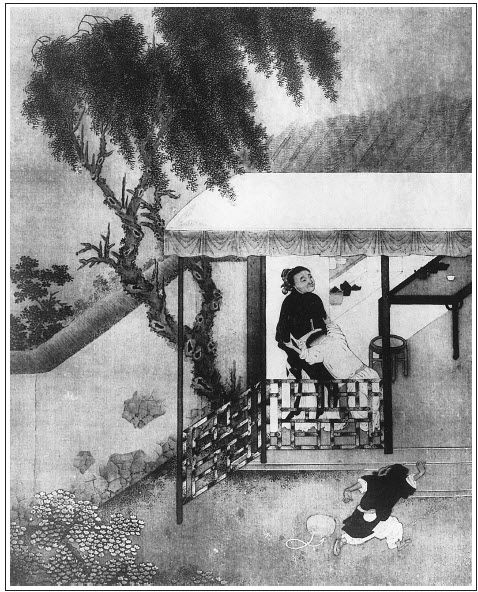

張回此回文字，妙在上半捉姦，句句是武大，卻句句是鄆哥；下半用藥，句句是金蓮，卻句句是王婆。
此回文字幽慘惡毒，直是一派地獄文字。夜深風雨，鬼火青熒，對之心絕欲死。我不忍批，不耐批，亦且不能批，卻不知作者當日何以能細細的做出也。
教我明日拿筆做這樣一篇文字，其實不敢。蓋想不得，非做不得也。
拿砒霜來，是西門罪案。後文用藥，是金蓮罪案。前用刁唆，結末收拾，總雲是王婆罪案。
上文勾情處，要與「花園調婿」一回對讀，見文不犯手。此文要與「貪慾喪命」一回對讀，見報總一般。
看此回而不作削髮想者，非人心。則此回又代普淨師現身說法也。
詩曰：
參透風流二字禪，好姻緣是惡姻緣。
癡心做處人人愛，冷眼觀時個個嫌。
野草閒花休采折，真姿勁質自安然。
山妻稚子家常飯，不害相思不損錢。

話說當下鄆哥被王婆打了，心中正沒出氣處，提了雪梨籃兒，一逕奔來街上尋武大郎。轉了兩條街，只見武大挑著炊餅擔兒，正從那條街過來。鄆哥見了，立住了腳，看著武大道：「這幾時不見你，吃得肥了！」武大歇下擔兒道：「我只是這等模樣，有甚吃得肥處？」鄆哥道：「我前日要糴些麥稃，一地裡沒糴處，人都道你屋裡有。」武大道：「我屋裡並不養鵝鴨，那裡有這麥稃？」鄆哥道：「你說沒麥稃，怎的賺得你恁肥耷耷的，便顛倒提你起來也不妨，煮你在鍋裡也沒氣。」繡眉善說不如善激。武大道：「小囚兒，倒罵得我好。我的老婆又不偷漢子，繡旁未必。我如何是鴨？」鄆哥道：「你老婆不偷漢子，只偷子漢。」武大扯住鄆哥道：「還我主兒來！」鄆哥道：「我笑你只會扯我，卻不道咬下他左邊的來。」武大道：「好兄弟，你對我說是誰，我把十個炊餅送你。」鄆哥道：「炊餅不濟事。你只做個東道，我吃三杯，便說與你。」武大道：「你會吃酒？跟我來。」
武大挑了擔兒，引著鄆哥，到個小酒店裡，歇下擔兒，拿幾個炊餅，買了些肉，討了一鍾酒，請鄆哥吃著。武大道：「好兄弟，你說與我則個。」鄆哥道：「且不要慌，等我一發吃完了，卻說與你。你卻不要氣苦，我自幫你打捉。」張夾看他已有成算，全是為自己氣，不是為人。武大看那猴子吃了酒肉：「你如今卻說與我。」鄆哥道：「你要得知，把手來摸我頭上的疙瘩。」武大道：「卻怎地來有這疙瘩？」鄆哥道：「我對你說，我今日將這籃雪梨去尋西門大官，一地裡沒尋處。街上有人道：『他在王婆茶坊裡來，和武大娘子勾搭上了，每日只在那裡行走。』我指望見了他，撰他三五十文錢使。叵耐王婆那老豬狗，不放我去房裡尋他，大栗暴打出我來。我特地來尋你。我方才把兩句話來激你，我不激你時，你須不來問我。」武大道：「真個有這等事？」鄆哥道：「又來了，我道你這般屁鳥人！那廝兩個落得快活，只專等你出來，便在王婆房裡做一處。你問道真個也是假，難道我哄你不成？」武大聽罷，道：「兄弟，我實不瞞你說，我這婆娘每日去王婆家裡做衣服，做鞋腳，歸來便臉紅。我先妻丟下個女孩兒，朝打暮罵，不與飯吃，張夾刺人心眼。這兩日有些精神錯亂，見了我，不做歡喜。我自也有些疑忌在心裡，這話正是了。我如今寄了擔兒，便去捉姦如何？」鄆哥道：「你老大一條漢，元來沒些見識！那王婆老狗，什麼利害怕人的人！你如何出得他手？他二人也有個暗號兒，見你入來拿他，把你老婆藏過了。那西門慶須了得！打你這般二十個。若捉他不著，反吃他一頓好拳頭。他又有錢有勢，反告你一狀子，你須吃他一場官司，又沒人做主，干結果了你性命！」繡眉此兒大有作用，然亦多事。武大道：「兄弟，你都說得是。我卻怎的出得這口氣？」鄆哥道：「我吃那王婆打了，也沒出氣處。我教你一著：今日歸去，都不要發作，也不要說，只自做每日一般。明朝便少做些炊餅出來賣，我自在巷口等你。若是見西門慶入去時，我便來叫你。你便挑著擔兒只在左近等我。我先去惹那老狗，他必然來打我。我先把籃兒丟出街心來，你卻搶入。我便一頭頂住那婆子，你便奔入房裡去，叫起屈來。此計如何？」武大道：「既是如此，卻是虧了兄弟。張眉看武大連呼「二哥」親熱。此處呼「兄弟」，只覺悲咽。我有兩貫錢，我把你去，你到明日早早來紫石街巷口等我。」鄆哥得了錢並幾個炊餅，自去了。武大還了酒錢，挑了擔兒，自去賣了一遭歸去。
原來這婦人，往常時只是罵武大，百般的欺負他。近日來也自知無禮，只得窩盤他些個。繡眉亦能自反。張夾然則必死武大，王婆之罪尤甚。當晚武大挑了擔兒歸來，也是和往日一般，並不題起別事。那婦人道：「大哥，買盞酒吃？」武大道：「卻才和一般經紀人買了三盞吃了。」那婦人便安排晚飯與他吃了。當夜無話。次日飯後，武大只做三兩扇炊餅，安在擔兒上。這婦人一心只想著西門慶，那裡來理會武大的做多做少。當日武大挑了擔兒，自出去做買賣。這婦人巴不的他出去了，便踅過王婆茶坊裡來等西門慶。
且說武大挑著擔兒，出到紫石街巷口，迎見鄆哥提著籃兒在那裡張望。繡旁有心哉。武大道：「如何？」鄆哥道：「還早些個。你自去賣一遭來，那廝七八也將來也。你只在左近處伺候，不可遠去了。」武大雲飛也似去賣了一遭回來。鄆哥道：「你只看我籃兒拋出來，你便飛奔入去。」武大把擔兒寄下，張旁細。不在話下。
卻說鄆哥提著籃兒，走入茶坊裡來，向王婆罵道：「老豬狗！你昨日為甚麼便打我？」那婆子舊性不改，便跳身起來喝道：「你這小猢猻！老娘與你無干，你如何又來罵我？」繡眉王婆老矣，戒之口得，且又全以血氣用事，宜乎其敗也。鄆哥道：「便罵你這馬泊六，做牽頭的老狗肉，直我𩫻𩫵！」張夾四字如聞其聲。那婆子大怒，揪住鄆哥便打。鄆哥叫一聲：「你打我！」把那籃兒丟出當街上來。那婆子卻待揪他，被這小猴子叫一聲「你打」時，就打王婆腰裡帶個住，看著婆子小肚上，只一頭撞將去，繡旁仔細著，撞了進去。險些兒不跌倒，卻得壁子礙住不倒。那猴子死頂在壁上。繡旁可觀只見武大從外裸起衣裳，大踏步直搶入茶坊裡來。那婆子見是武大，來得甚急，待要走去阻當，卻被這小猴子死力頂住，那裡肯放！婆子只叫得「武大來也！」那婦人正和西門慶在房裡，做手腳不迭，先奔來頂住了門。這西門慶便鑽入床下躲了。武大搶到房門首，用手推那房門時，那裡推得開！口裡只叫「做得好事！」張旁武大口裡。那婦人頂著門，慌做一團，繡旁可觀。口裡便說道：張旁婦人口裡。「你閒常時只好鳥嘴，賣弄殺好拳棒，臨時便沒些用兒！見了紙虎兒也嚇一交！」那婦人這幾句話，分明叫西門慶來打武大，奪路走。西門慶在床底下聽了婦人這些話，提醒他這個念頭，便鑽出來說道：「不是我沒這本事，一時間沒這智量。」繡眉語云：能搏猛虎，不能不變色於蜂蠆，理固然也。便來拔開門，叫聲「不要來！」武大卻待揪他，被西門慶早飛起腳來。武大矮小，正踢中心窩，撲地望後便倒了。西門慶打鬧裡一直走了。張夾寫出淫穢婦人狠處。所以必說西門慶會得一身好拳棒，單是為此一事。鄆哥見勢頭不好，也撇了王婆，撒開跑了。張夾寫鄆哥。街坊鄰舍，都知道西門了得，誰敢來管事？張夾夾寫鄰舍，百忙裡閒筆，卻是細筆。王婆當時就地下扶起武大來，見他口裡吐血，面皮臘渣也似黃了，便叫那婦人出來，舀碗水來救得甦醒，兩個上下肩攙著，便從後門張夾後門六。歸到家中樓上去，安排他床上睡了。張夾以上一段捉姦，以下一段用藥。當夜無話。
次日，西門慶打聽得沒事，依前自來王婆家，和這婦人頑耍，只指望武大自死。武大一病五日不起，更兼要湯不見，要水不見，每日叫那婦人又不應。只見他濃妝艷抹了出去，歸來便臉紅。小女迎兒又吃婦人禁住，不得向前，嚇道：「小賤人，你不對我說，與了他水吃，都在你身上！」那迎兒見婦人這等說，怎敢與武大一點湯水吃！武大幾遍只是氣得發昏，又沒人來采問。一日，武大叫老婆過來，分咐他道：「你做的勾當，我親手捉著你奸，你倒挑撥姦夫踢了我心。至今求生不生，求死不死，你們卻自去快活。我死自不妨，和你們爭執不得了。我兄弟武二，你須知他性格，倘或早晚歸來，他肯干休？你若肯可憐我，早早扶得我好了，他歸來時，我都不提起。你若不看顧我時，待他歸來，卻和你們說話。」這婦人聽了，也不回言，卻踅過王婆家來，一五一十都對王婆和西門慶說了。那西門慶聽了這話，似提在冷水盆內一般，說道：「苦也！我須知景陽崗上打死大蟲的武都頭。張夾一語直接咬指頭，緊甚。我如今卻和娘子眷戀日久，情孚意合，拆散不開。據此等說時，正是怎生得好？卻是苦也！」王婆冷笑道：「我倒不曾見，你是個把舵的，我是個撐船的，我倒不慌，你倒慌了手腳！」西門慶道：「我枉自做個男子漢，到這般去處，卻擺佈不開。你有甚麼主見，遮藏我們則個。」王婆道：「既然我遮藏你們，我有一條計。你們卻要長做夫妻，短做夫妻？」西門慶道：「乾娘，你且說如何是長做夫妻、短做夫妻？」繡眉老奸可剮。王婆道：「若是短做夫妻，你們就今日便分散。等武大將息好了起來，與他陪了話。武二歸來都沒言語，待他再差使出去，卻又來相會。這是短做夫妻。你們若要長做夫妻，每日同在一處，不耽驚受怕，我卻有這條妙計，只是難教你們──」張夾不是故意逗留不說，卻是委實難教。西門慶道：「乾娘，周旋了我們則個，只要長做夫妻。」王婆道：「這條計用著件東西，別人家裡都沒，天生天化，大官人家裡卻有。」西門慶道：「便是要我的眼睛，也剜來與你。卻是甚麼東西？」王婆道：「如今這搗子病得重，趁他狼狽，好下手。繡眉可殺。大官人家裡取些砒霜，卻交大娘子自去贖一帖心疼的藥來，卻把這砒霜下在裡面，把這矮子結果了，一把火燒得乾乾淨淨，沒了蹤跡。便是武二回來，他待怎的？自古道：『幼嫁從親，再嫁由身。』小叔如何管得暗地裡事！半年一載，等待夫孝滿日，大官人娶到家去。這不是長遠夫妻，偕老同歡！此計如何？」西門慶道：「乾娘此計甚妙。自古道：欲救生快活，須下死功夫。罷罷罷！一不做，二不休。」王婆道：「可知好哩！這是剪草除根，萌芽不發。繡旁可殺。大官人往家裡去快取此物來，我自教娘子下手。事了時，卻要重重謝我。」西門慶道：「這個自然，不消你說。」
雲情雨意兩綢繆，戀色迷花不肯休。
畢竟人生如泡影，何須死下殺人謀？
且說西門慶去不多時，包了一包砒霜，遞與王婆收了。張夾只此是西門慶罪案。這婆子看著那婦人道：「大娘子，我教你下藥的法兒。如今武大不對你說教你救活他？你便乘此把些小意兒貼戀他。他若問你討藥吃時，便把這砒霜調在心疼藥裡。待他一覺身動，你便把藥灌將下去。他若毒氣發時，必然腸胃迸斷，大叫一聲。你卻把被一蓋，不要使人聽見，緊緊的按住被角。繡眉劊子手無此毒腸。老奸百剁不足贖矣。預先燒下一鍋湯，煮著一條抹布。他那藥發之時，必然七竅內流血，口唇上有牙齒咬的痕跡。他若放了命，你便揭起被來，卻將煮的抹布只一揩，都揩沒了血跡，便入在材裡，扛出去燒了，有甚麼不了事！」張夾寫得王婆惡處，蓋不止一武大受禍也。那婦人道：「好卻是好，繡旁有何好處？可恨，可恨。只是奴家手軟，臨時安排不得屍首。」婆子道：「這個易得。你那邊只敲壁子，我自過來幫扶你。」西門慶道：「你們用心整理，明日五更，我來討話。」說罷，自歸家去了。王婆把這砒霜用手撚為細末，遞與婦人，將去藏了。張夾一路寫得黑越越，怕人。
那婦人回到樓上，看著武大，一絲沒了兩氣，看看待死。那婦人坐在床邊假哭。武大道：「你做甚麼來哭？」婦人拭著眼淚道：「我的一時間不是，吃那西門慶局騙了。誰想腳踢中了你心。我問得一處有好藥，我要去贖來醫你，又怕你疑忌，不敢去取。」武大道：「你救我活，無事了，一筆都勾。武二來家，亦不提起。你快去贖藥來救我則個！」那婦人拿了銅錢，逕來王婆家裡坐地，張夾此等處比用藥時更可恨，我最不敢讀。卻教王婆贖得藥來。把到樓上，交武大看了，說道：「這帖心疼藥，太醫交你半夜裡吃了，倒頭一睡，蓋一兩床被，發些汗，明日便起得來。」武大道：「卻是好也。生受大嫂，今夜醒睡些，半夜調來我吃。」繡旁可憐。那婦人道：「你放心睡，我自扶持你。」繡眉讀此而不發指心裂者，非情也。看看天色黑了，婦人在房裡點上燈，下面燒了大鍋湯，拿了一方抹布煮在鍋裡。聽那更鼓時，卻正好打三更。張夾三更。那婦人先把砒霜傾在盞內，卻舀一碗白湯，把到樓上，叫聲：「大哥，藥在那裡？」武大道：「在我蓆子底下枕頭邊，你快調來我吃！」那婦人揭起蓆子，將那藥抖在盞子裡，將白湯沖在盞內，把頭上銀簪兒只一攪，調得勻了。左手扶起武大，右手把藥便灌。武大呷了一口，說道：「大嫂，這藥好難吃！」那婦人道：「只要他醫得病好，繡旁當真好否？管甚麼難吃！」武大再呷第二口時，被這婆娘就勢只一灌，一盞藥都灌下喉嚨去了。那婦人便放倒武大，慌忙跳下床來。武大哎了一聲，說道：「大嫂，吃下這藥去，肚裡倒疼起來。苦呀，苦呀！倒當不得了。」這婦人便去腳後扯過兩床被來，沒頭沒臉只顧蓋。武大叫道：「我也氣悶！」那婦人道：「太醫吩咐，教我與你發些汗，便好的快。」武大再要說時，這婦人怕他掙扎，便跳上床來，騎在武大身上，把手緊緊的按住被角，那裡肯放些松寬！正是：
油煎肺腑，火燎肝腸。心窩裡如霜刀相侵，滿腹中似鋼刀亂攪。渾身冰冷，七竅血流。牙關緊咬，三魂赴在枉死城中；喉管枯乾，七魄投望鄉台上。地獄新添食毒鬼，陽間沒了捉姦人。
那武大當時哎了兩聲，喘息了一回，腸胃迸斷，嗚呼哀哉，身體動不得了。張夾以上是金蓮罪案。那婦人揭起被來，見了武大咬牙切齒，七竅流血，怕將起來，只得跳下床來，敲那壁子。王婆聽得，走過後門頭咳嗽。張夾後門七。那婦人便下樓來，開了後門。張夾後門八。王婆問道：「了也未？」那婦人道：「了便了了，只是我手腳軟了，安排不得。」王婆道：「有甚麼難處，我幫你便了。」張夾以下是王婆罪案。那婆子便把衣袖捲起，舀了一桶湯，把抹布撇在裡面，掇上樓來。捲過了被，先把武大口邊唇上都抹了，卻把七竅淤血痕跡拭淨，便把衣裳蓋在身上。兩個從樓上一步一掇扛將下來，就樓下尋扇舊門停了。與他梳了頭，戴上巾幘，穿了衣裳，取雙鞋襪與他穿了，將片白絹蓋了臉，揀床乾淨被蓋在死屍身上。卻上樓來，收拾得乾淨了，王婆自轉將歸去了。那婆娘卻號號地假哭起「養家人」來。看官聽說：原來但凡世上婦人哭有三樣：有淚有聲謂之哭，有淚無聲謂之泣，無淚有聲謂之號。當下那婦人乾號了半夜。
次早五更，天色未曉，西門慶奔來討信。王婆說了備細。西門慶取銀子把與王婆，教買棺材發送，就叫那婦人商議。這婆娘過來和西門慶說道：「我的武大今日已死，我只靠著你做主！不到後來『網巾圈兒──打靠後』。」西門慶道：「這個何須你費心！」婦人道：「你若負了心，怎的說？」西門慶道：「我若負了心，就是武大一般！」繡眉此誓非虛，要曉得金蓮手段原硬。張夾此蓋作者於此一篇地獄文字完，特特將七十九回一照，使看官知報應不爽，色慾無益。覺《水滸》用武松殺西門，不如用金蓮殺之也。王婆道：「大官人，如今只有一件事要緊：天明就要入殮，只怕被仵作看出破綻來怎了？團頭何九，他也是個精細的人，只怕他不肯殮。」西門慶笑道：「這個不妨事。何九我自吩咐他，他不敢違我的言語。」王婆道：「大官人快去吩咐他，不可遲了。」西門慶自去對何九說去了。正是：
三光有影誰能待，萬事無根只自生。
雪隱鷺鷥飛始見，柳藏鸚鵡語方聞。
文回
一
此數回皆《水滸傳》中文字也。作者非不能□（疑為別字）具爐錘，另開□□（原殘缺，下同），但原文實有不可磨滅者，故仍其舊，正以見作者服善慮□□。讀之能使前後牟尼一串，毫無補綴痕跡，此正見作者心細才大也。惟《水滸》以武松為主，此則以西門慶為主，故又不能不換面，此題旨使然耳。
總之，色即是空，空即是色。武二安在哉！西門大官人安在哉！若潘金蓮者，處處有之，吾亦時時見之。雖人告我曰：此不姓潘，此不名金蓮。予語之曰：潘金蓮，亦不必實有其人也。有潘金蓮之顏色，處潘金蓮之遇合，而能不為潘金蓮之作用，雖姓潘不能名為金蓮也。第恐事同金蓮之事，心同金蓮之心，縱無其事，並無其心，而淫與金蓮等，雖不名金蓮，直謂之姓潘可也。
二
甚矣，人之不可有所恃也，而無能者，尤不可有所恃。潘金蓮恃其色，西門慶恃其財，王婆子恃其口。色是禍水，財是雙戈，口是利刃，固皆其所自有者也。若武大郎何所恃乎？才不能以倚馬，力不能以縛雞，貌不足以驚人，錢不足以使鬼，所恃惟一好兄弟耳，固非其所自有者也。呼之不能即應，招之不能即來，望之不能即見。而彼之所恃者，又為人之所畏，一露其機，於是有死之路，無生之門矣，豈不痛哉！「武二歸來」四字，實武大催死令牌，送死令箭也。
非自有而恃之者，吾見亦多矣。恃閥閱而驕人，恃科第而傲人，恃富貴而凌人，恃父兄之威勢而欺人，恃親友之赫炎而侮人，是皆武大郎之類也。吾不知其死所矣。然則其所自有者，獨可恃乎？潘金蓮卒死於色矣，西門慶卒死於財矣，王婆子卒死於口矣。人顧何有所恃哉？曰：有。恃乎理，恃乎義，恃乎此心無私與無慾。
按：前評寫於光緒五年（1879）五月十一日。後評寫於光緒六年（1880）正月初四日。光緒八年（1882）八月十日重閱一遍。